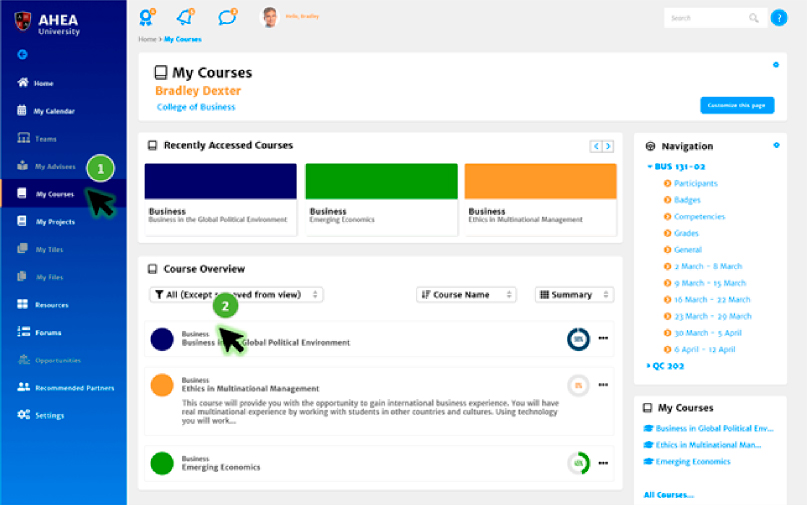
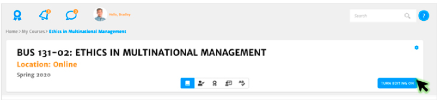
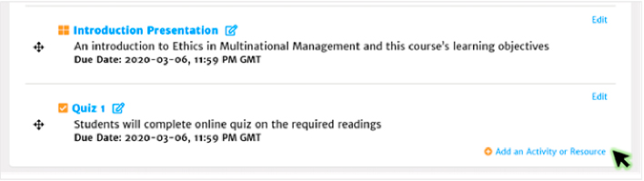
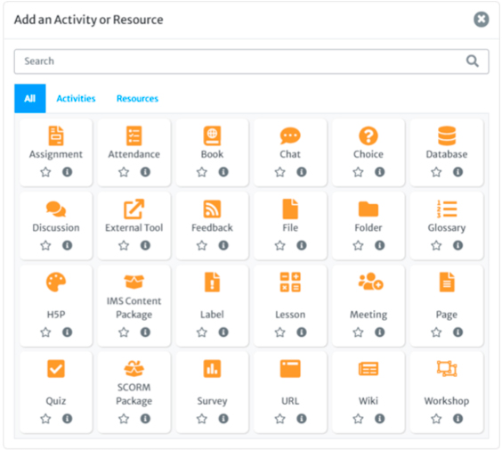
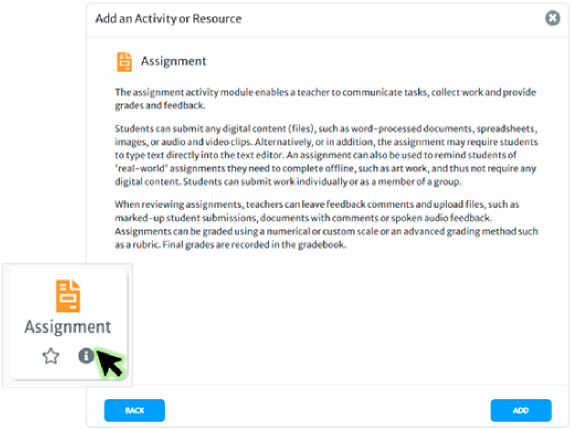
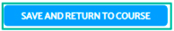
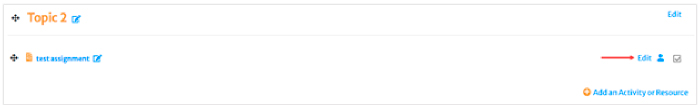

Course Administration through BlendED™ allows users to add new courses and categories, import courses, restore and backup courses, and assign course access levels. Assigning instructors and students to courses and managing classroom access is made simple. Administrators can configure, duplicate, and manage course shells for effortless management of course sections. With a Learning Management System (LMS) event activity log and analytics models, courses are administered with institutional effectiveness in mind.
The BlendED™ Learning Management System supports robust course customization with several course activities and resources to enhance the student learning experience.
To add activities and resources to a course, go to your course by selecting My Courses from the Left Navigation menu. Then, select the course you would like to modify.

Click the TURN EDITING ON button to place the course in edit mode.

Click on the Add an Activity or Resource hyperlink within the section, topic, or week of choice.

The default view shows you all the available Activities and Resources you can add to your course.

To learn more about an activity or resource, you can select the info icon for a description of the activity.

Select the Activity or Resource you would like to add to the course, or the Add button from the info slide, to begin setting up your activity or resource.
Input as much information as possible in each field to set up your course activity or resource.
Click on the SAVE AND RETURN TO COURSE button when done making changes to return to your course with your new activity or resource added.

Remember, you can modify the settings of your new Activity or Resource by clicking on the corresponding Edit hyperlink.
